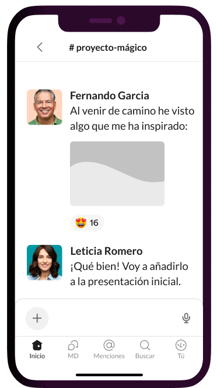

Mensajería comprometida
Slack está diseñado para el trabajo. Es la aplicación que te permite contactar con tu equipo rápidamente sin importar dónde estés.
Más información sobre las funciones de Slack


Slack está diseñado para el trabajo. Es la aplicación que te permite contactar con tu equipo rápidamente sin importar dónde estés.
Más información sobre las funciones de SlackLos canales son el corazón de Slack. Son espacios organizados para todo el mundo que contienen todo lo necesario para trabajar.
Más información sobre los canalesPuedes chatear, enviar clips de audio y vídeo o unirte a una junta para discutir asuntos en directo.
Obtén más información acerca de la comunicación flexibleSlack se adapta de forma segura para garantizar la colaboración en las empresas más importantes del mundo.
de usuarios afirma que Slack ha mejorado la comunicación*
creen que su capacidad para trabajar a distancia ha mejorado*
se sienten más conectados con sus equipos*
* Promedio ponderado. Basado en una encuesta de 2707 respuestas de usuarios semanales de Slack en Estados Unidos, Reino Unido, Australia y Canadá, con un margen de error de ± 2 % al 95 % CI (diciembre de 2021).